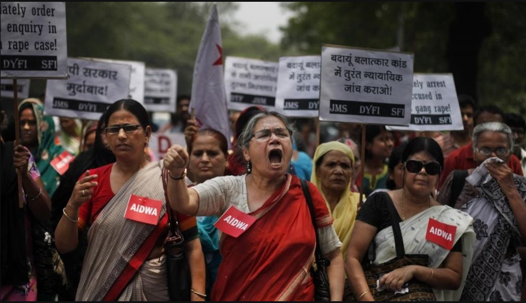

그리고 종교적차별로 힌두교가 아닌사람은 인도에서 사람취급을 안하는 가운데 종교로 인해 화장실이 없다.
실제로 어떤여성이 화장실이 없어서 밖에서 싸다가 어떤 남자가 성폭행하는 사건이 있었다.
인도는 여자가 지휘가 낮아 성차별,성폭행,성희롱,여성폭행등 많은일이 일어난다.
그러면서 지금도 많은 인권운동이 벌어진다.
인도의 법을 바꾼다.
 영여여여여여ㅕ영상
되돌아가기